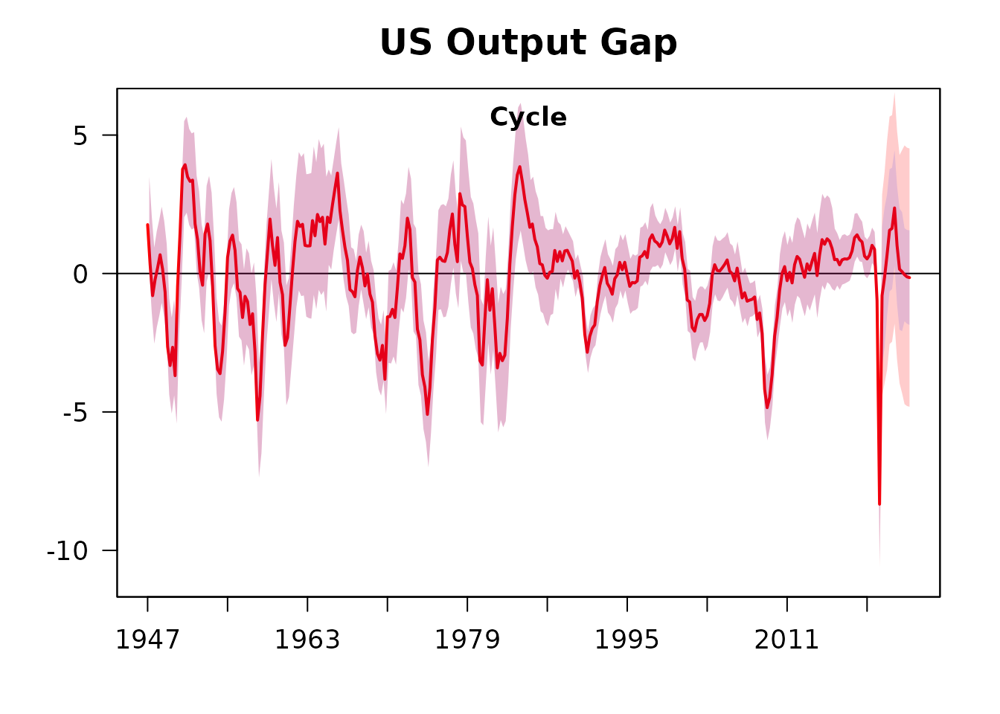

Beveridge-Nelson Filter United States
DNFilter-UnitedStates.RmdThis example uses the updated US GDP dataset through to 2023 Q2.
Take the log(usgdp) * 100.0
y <- transform_series(y=usgdp, take_log=TRUE, pcode = "p1") Example with dynamic demean
bnfOutput <- bnf(y=y,
delta_select = 2,
demean = "dm",
iterative = 100,
dynamic_bands = TRUE,
adjusted_bands = TRUE,
outliers = c(293, 294),
window = 40,
ib = TRUE)United States Output Gap, with adjusted bands and outlier adjustment for COVID19:
plot(bnfOutput, main = "US Output Gap")
#> Warning in matrix(data = c(1, 2), nrow = 1, ncol = 1): data length differs from
#> size of matrix: [2 != 1 x 1]